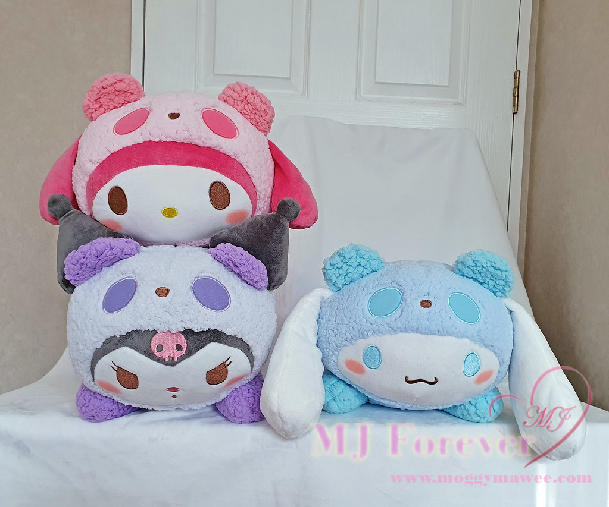

I love open world games! To me, the act of exploration is fun, not only that but the lore of the game is easier to walk through and find in an open world game than it would be in other types of games.
plushies are amazing, they are like pillows with character and design. speaking of characters; my favorite plushies are usually Sanrio characters. Heres a list of common ones you would find as plushies:

I was raised in a chinese house hold, so naturally I would be eating a bunch of chinese cuisine. most of the food is really good but the few things i love in particular are the chinese pastries! my top 3 are listed as below: